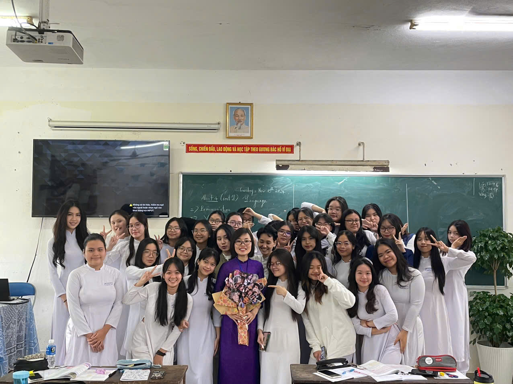
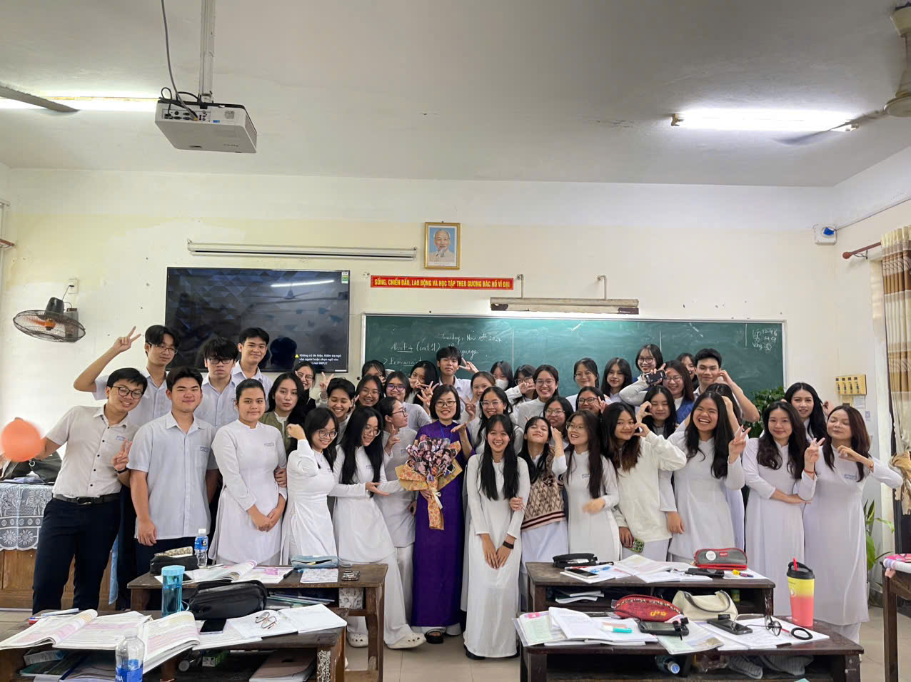
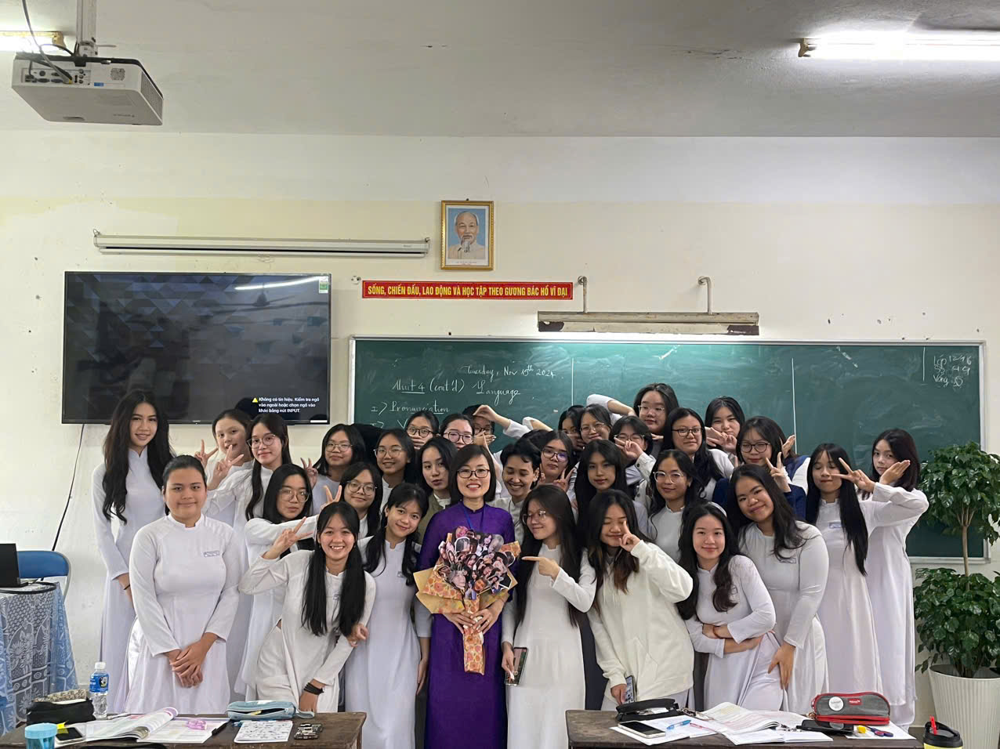
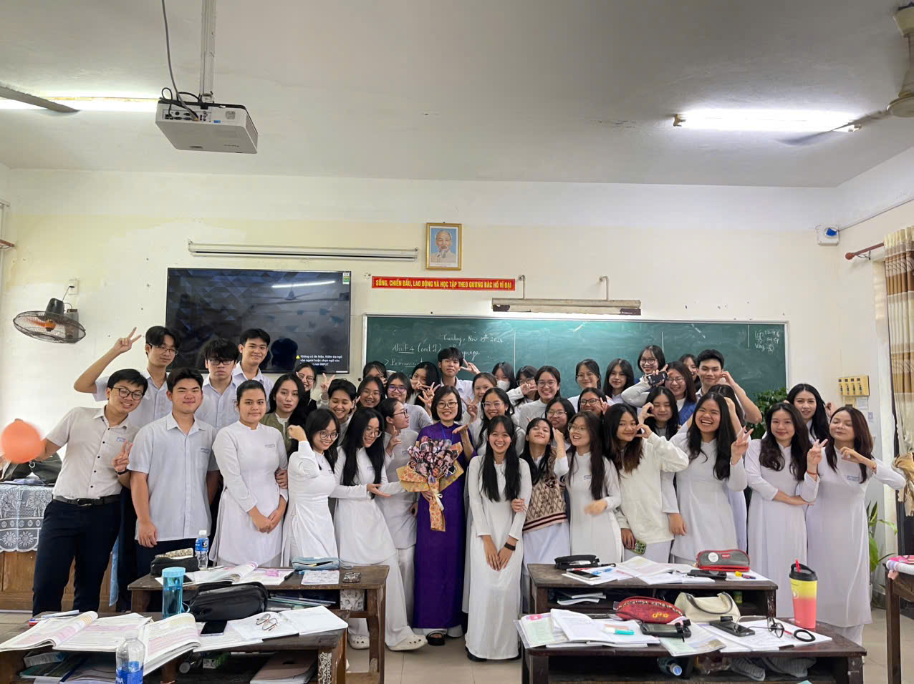

Góc Ảnh
Những bức ảnh đáng nhớ từ những ngày tháng học tập và vui chơi cùng nhau.
 Hãy chia sẻ những kỷ niệm tuyệt vời của một chặng đường học tập đầy ý nghĩa!
Chào các bạn! Đây là trang báo tường điện tử của lớp chúng ta, nơi lưu lại những khoảnh khắc không thể quên trong ngày ra trường. Hãy cùng nhìn lại những năm tháng đã qua và những kỷ niệm đáng nhớ trong chặng đường học tập của chúng ta.
Ngày ra trường là một bước ngoặt quan trọng trong cuộc đời mỗi người, là thời khắc đầy cảm xúc, vừa là sự kết thúc của một chặng đường học tập, vừa là bước ngoặt lớn trong cuộc đời mỗi học sinh. Đó là lúc ta nhìn lại những năm tháng với bao kỷ niệm đẹp đẽ, những giờ học, những lần cùng bạn bè chia sẻ niềm vui và khó khăn. Cảm giác tiếc nuối và bồi hồi khi phải chia tay thầy cô, bạn bè, và mái trường thân yêu thật khó diễn tả thành lời. Nhưng cũng chính trong khoảnh khắc này, ta nhận ra rằng mọi thử thách, khó khăn đều là bài học quý giá, và đây chỉ là sự khởi đầu của một hành trình mới đầy hứa hẹn. Hãy cùng nhau chia sẻ những cảm xúc, nhìn lại những kỉ niệm quý giá ấy trong ngày trọng đại này!
Những bức ảnh đáng nhớ từ những ngày tháng học tập và vui chơi cùng nhau.
 Hãy thư giãn và lắng nghe những ca khúc gắn liền với những kỷ niệm của chúng ta trong suốt những năm học. Dưới đây là một số video clip đặc biệt cho ngày ra trường.